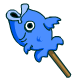

Fish Pop

Description
This is a fish pop recipe as seen on
neopets.com.
Ingredients
- One handsaw
- One whittling knife
- One piece of sandpaper (rough)
- One net
- Four Meepits
Steps
- Visit your local hardware store or Pirate Plunder outlet.
- Purchase any tools listed above that you didn't already have in your basement.
- Hop on a boat to Mystery Island.
- Don't rock the boat.
- Upon arriving at Mystery Island, wander the jungles until you find a rubber tree. There's one in there somewhere.
- Chop down said rubber tree.
- Whittle the tree down to one stick, exactly 230 mm long and 5 mm in diameter.
- Sand said stick so as not to give the fish (or the eventual consumer of the fish) any splinters.
- Store the stick in a place where it won't get stolen, like your pocket or something. We'll come back to it later.
- Wander lost in the jungle for a few days until you come across some hungry natives.
- RUN!
- Eventually make your way to the shores, where hungry natives dare not tread.
- Use the net to go fishing.
- Use the fishing pole you just caught in the net to actually catch a fish.
- Retrieve the stick. Hopefully you kept it in your pocket.
- Put the stick in your right hand.
- Put the fish in your left hand.
- If you are left-handed, switch the stick and the fish. This step is optional.
- Bring your hands together.
Congratulations! Now you have a fish on a stick, otherwise known as a Fish Pop! Please remember: when making a Fish Pop, get a parent's permission first!